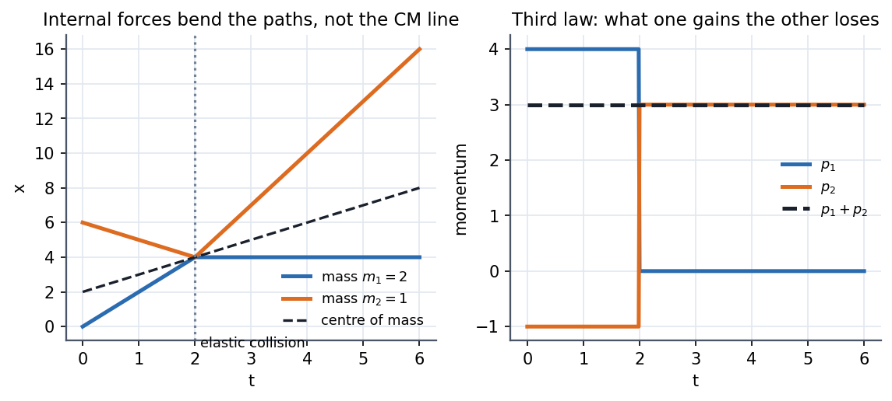

Newton's Third Law and Momentum Conservation
If every force has an equal and opposite partner, the partners cancel in the total, so the total momentum of an isolated system cannot change. Momentum conservation is not a fourth law; it is the third law summed over all the particles. Its power is that it ignores the messy internal forces completely.
Visual

Figure: A 2 kg mass meets a 1 kg mass in a head-on elastic collision. Left, their paths bend at the collision but the centre of mass (dashed) is a straight line. Right, and jump in opposite directions by the same amount, so stays at .
Governing relation
For two particles with only mutual forces, , so
For particles, . Equivalently the centre of mass obeys : it moves as if all the mass sat there and only external forces acted.
Component form: momentum is a vector, so it is conserved component by component. If the external force vanishes only along , then is conserved even though is not.
🎯 Predict first: a firework flying in a parabola explodes mid-air. Where does the centre of mass of all the fragments go?
It carries on along the same parabola, as if nothing had happened. The explosion forces are internal; only gravity is external. Fragments fly apart symmetrically about that moving point.
Method
- Draw the system boundary so the interesting forces are internal.
- Check what is external along each axis (gravity, normal force, friction, a wall).
- Write for each conserved component.
- Add energy only if the collision is elastic (kinetic energy conserved). Otherwise use a restitution coefficient.
- Check: the CM velocity before and after must match.
Collision cheat sheet
| Type | Momentum | Kinetic energy | Final velocities |
|---|---|---|---|
| Elastic | conserved | conserved | , |
| Perfectly inelastic | conserved | maximum loss | one common |
| General | conserved | partly lost | , |
Common traps
⚠️ "Action and reaction cancel, so nothing can ever move"
They act on different bodies. Your push on a wall and the wall's push on you cancel in a total, but each only changes the momentum of the body it acts on.
⚠️ Treating energy as conserved in every collision
Momentum is always conserved when external forces are negligible. Kinetic energy is conserved only in elastic collisions; a car crash converts it to heat and deformation.
🧠 Where does the third law break down?
For forces that travel at finite speed or are carried by fields. Two moving charges exert forces on each other that are not equal and opposite at the same instant; the missing momentum is stored in the electromagnetic field. Momentum is still conserved, but only if you count the field.
Worked example
🔬 kg at m/s hits kg at m/s, elastically. Find both velocities afterwards
Total momentum kg·m/s, so m/s. and m/s. Check: momentum after ✓. Kinetic energy before J; after J ✓. In the CM frame each ball simply reverses its velocity.
Quick quiz
Q1. You step off a kg boat at rest onto a dock at m/s ( kg). How fast does the boat recoil?
before, so and m/s. The boat is lighter, so it moves faster.
Q2. Two skaters push off each other. Is their total kinetic energy conserved?
No: it goes from to positive, supplied by their muscles. Their total momentum is still zero.
Connections
Prerequisites
Next
- Two-Body Problem and Hohmann Transfer: the centre of mass and the reduced mass turn two bodies into one.
- Cyclic Coordinates and Conservation Laws: momentum conservation re-derived as a symmetry (translation invariance).
Cross-domain links
- Momentum Equation Applications - Jets, Vanes, Bends: a jet hitting a vane is momentum conservation applied to a control volume.
- Linear Momentum Equation: the fluid version, , is this law written for flowing mass.
- Conservation Laws and Flow Networks: all conservation laws share the "what goes in must come out" bookkeeping.
Self-check
Metadata
- Status: draft · Type: concept · Difficulty: beginner–intermediate
- Course map: Physics I - MOC